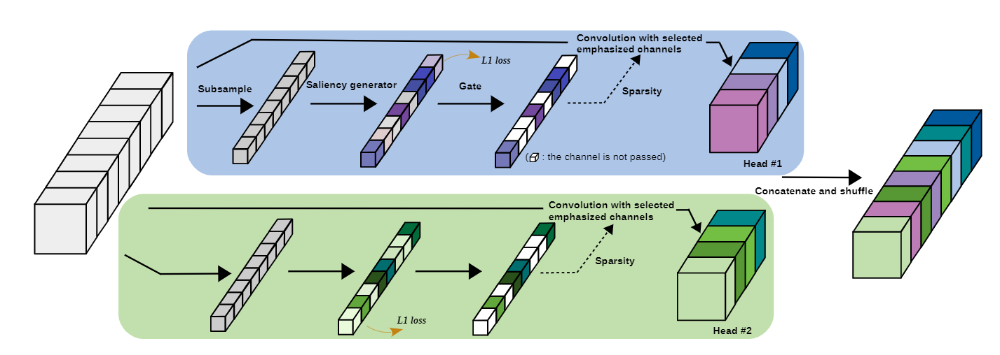
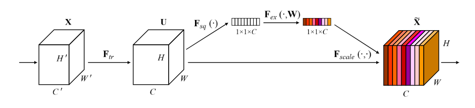
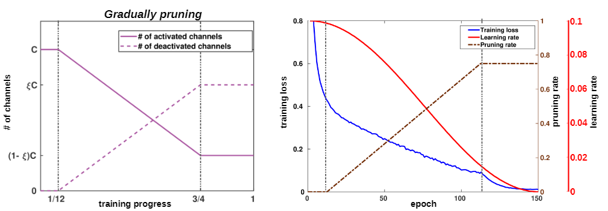

-
蓝色和绿色两个分支代表两个头，同样的输入同时进入两个头。每个头的操作都一样，但是拥有独立的权重。下文以其中一个头的操作为例。
-
对输入按通道求均值，获得通道数维度的向量（Subsample）。
-
输入进入一个两层的MLP（ReLu激活），得到维度不变的稀疏向量（Saliency Generator），可以视为各通道的重要性得分或权重。
-
该稀疏向量的均值即为图中的L1 loss，原文希望通过对L1 loss的优化得到稀疏解。
-
按照提前设置的比例将重要性得分最低的几个通道的权重设为0（Gate）。
-
对每个通道乘以权重，此时有的通道数值被扩大，有的通道数值被缩小，有的通道数值被变为0。然后做普通卷积，得到该头的输出。
-
把各头的输出按照通道拼接，得到动态分组卷积的输出。
维度推导
- 输入$(N,C,H,W)$
- 分$h$个头，就创建$h$个Saliency Generator
Saliency Generator
原论文直言这部分参考了SENet的思想，遵循SEBlock的设计规范。

-
按通道求均值得到$AVG_X = (N,C)$
-
全连接+ReLu，$ReLu((N,C)\times(C,\frac{C}{d})) = ReLu((N,\frac{C}{d}))$，$d$为squeeze rate，是超参数，原文设为16。
-
全连接+ReLu，$Mask = ReLu((N,\frac{C}{d})\times (\frac{C}{d},C)) = ReLu((N,C))$
Gating Strategy
若$\text{inactive_channels}=0$，$Mask$即为各通道的权重。若$\text{inactive_channels}>0$，则把权重最低的inactive_channels个通道的权重设为$0$。
- 对每个头，对输入$(N,C,H,W)$，按维度$C$乘以权重$Mask$，获得新的feature_map。
- 把所有头得到的feature_map按通道拼接，获得$(N,h*C,H,W)$并按通道打乱（为什么打乱？）。
- 分$h$组卷积，输出$(N,C_{\text{out}},H,W)$
参数量计算
普通卷积
$$ C_{\text{in}}C_{\text{out}}HW $$
分组卷积
$$ \frac{C_{\text{in}}}{\text{group_num}}C_{\text{out}}HW $$
动态分组卷积
$$ C_{\text{in}}C_{\text{out}}HW + (C_{\text{in}}\frac{C_{\text{in}}}{d}+\frac{C_{\text{in}}}{d}C_{\text{in}})h $$
其中$d$为SEBlock的squeeze rate，$h$为头的数量。
可能存在的问题
参数量大
从卷积核的参数上看，动态分组卷积和普通卷积需要的参数量是一致的。但是由于每个头内部都需要一个SEBlock计算通道权重，所以总参数量还要略多于普通卷积。
然而从运用L1 loss，Gating Strategy可以看出，论文作者是希望得到一个稀疏的通道权重，从而限制每个头得到的信息，与普通卷积区别开来。这就意味着那些被稀疏权重设为0的通道，所对应的卷积核参数都是无用的。如果删除这部分权重，动态分组卷积在卷积核部分的参数量能够减小$h$倍。
需要学习的内容多
涉及到动态权重的网络结构一般都比较难学习，特别是样本量不足时。在高光谱图像上应用动态分组卷积会发现过拟合比较严重。如果按照原论文的裁剪策略，随着训练次数逐渐增大Gating（强制把某些通道权重设为0）的数量，伴随着Gating通道数的增加，loss和acc的波动会很大，和原文在 CIFAR-10上的训练效果不符。

很自然地想到，是否由于模型效果依赖那些被裁剪的通道才导致了这样的波动？在通道数本就不多的情况下，这样的裁剪策略是否意味着每次增加裁剪数量都要模型重新学习？会不会导致最终的模型得不到充足的训练（只占总epoch的1/4）？
所以不如抛弃原文的Gradually pruning策略，从训练开始就使用最终的裁剪比例（如图中的$\xi$）。
而此时，既然一开始就有这么多通道被屏蔽（权重设为0），那对其他通道的增强（权重大）或减弱（权重小）是否还有意义？原文参考的SENet采用了相似的通道增强或减弱方案（直接乘以权重），但是我认为这是因为SENet没有裁剪这个步骤，所以必须通过增强和减弱拉开重要通道和不重要通道的差距。而动态分组卷积既然已经对不重要通道做出了裁剪，是否可以进一步剔除对通道的增强和减弱，从而减少模型的学习负担？
所以可以尝试只根据SEBlock计算的通道权重裁剪最不重要的通道，对其他通道不做处理。
L1 loss
原文为了在Saliency Generator得到尽可能稀疏的解，使用了L1 loss。最后通过梯度下降法优化。
更具体的：原文在SEBlock阶段使用了ReLu激活的全连接网络生成每个通道的权重，故权重均大于等于0，从而权重的均值可以看作L1 loss。原文对权重均值直接进行梯度下降，希望得到稀疏解。
我对梯度下降法能否产生稀疏解持怀疑态度。我认为即使loss形式类似一范数，但采用梯度下降法优化只能减小输出，不能达到得到稀疏解的目的。
如果为了得到稀疏解，将LARS算法应用在深度学习，可能具有较大挑战，一方面缺乏理想通道权重标签（y），另一方面可能需要解决并行计算的问题。
那原论文为什么希望得到稀疏解呢？
原论文中SEBlock输出的权重会和通道相乘，达到增强或减弱通道信号的目的，如果某些权重因为太小而被Gating策略强制设为0，可能导致一定的信息丢失。因为模型可能依赖这部分被裁剪的权重信息。所以最理想的情况就是SEBlock输出的权重是稀疏的，经过Gating的权重和模型本身希望得到的权重就是一致的了，没有信息丢失。
那简单地思考，如果应用上文的改进，是否意味着SEBlock的输出是否是稀疏解都无所谓？因为SEBlock输出只用作通道筛选，而无论输出何种权重，最终筛选出的通道数量是恒定的；另一方面SEBlock输出也不会作为通道权重进行增强，不需要考虑信息丢失。
可能的改进
综上，有以下几个可能的改进
- 抛弃Gradually pruning策略，使用固定的裁剪比例。
- 仅根据SEBlock输出筛选通道，不再使用该输出进行通道增强。
- 将筛选出有用的通道组合，形成新的feature maps，进行卷积，达到减少参数量的目的。